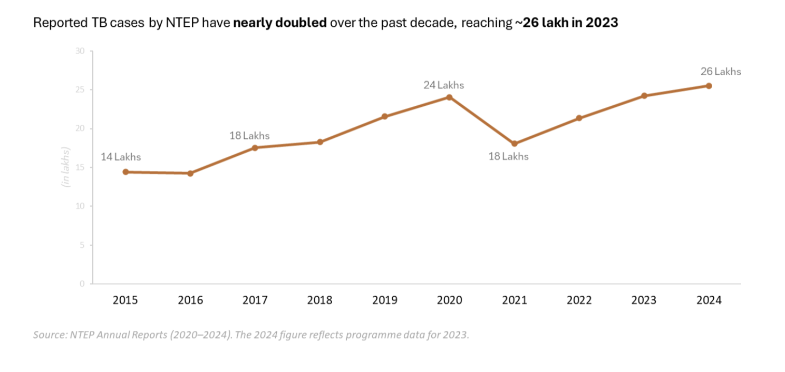
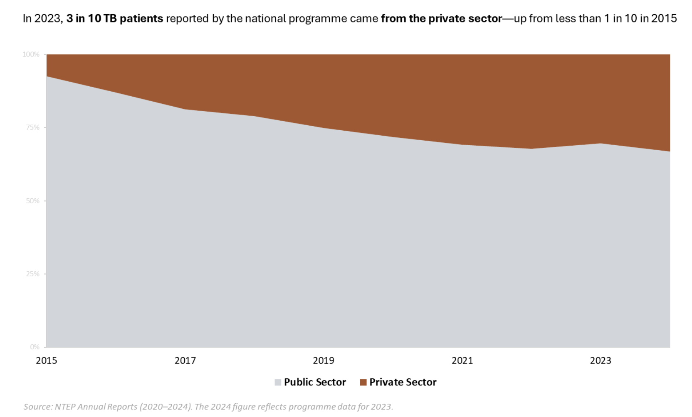
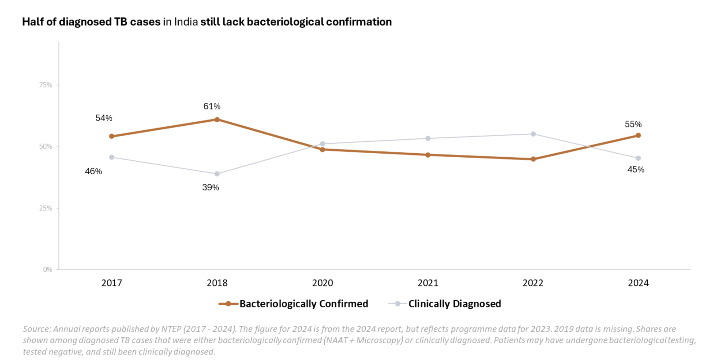
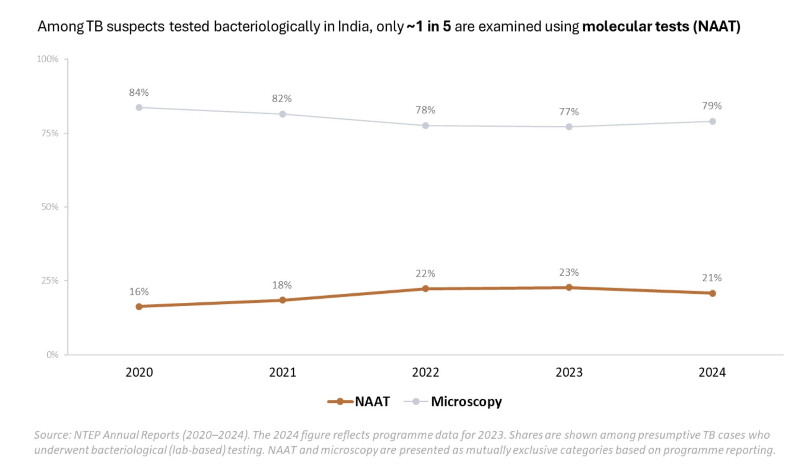
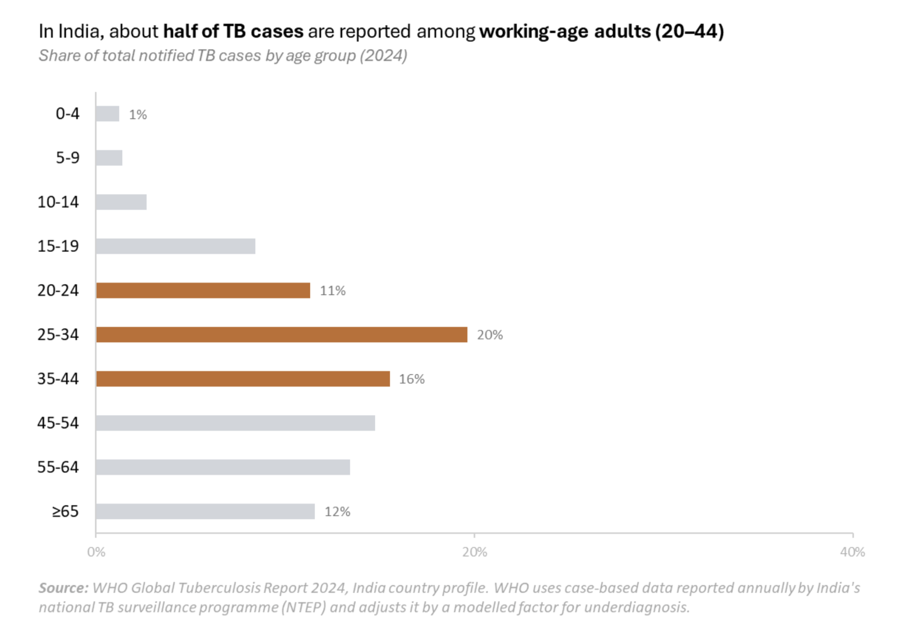

Reshma was twenty-six years old when she first developed a dry cough. In the cramped, poorly ventilated room she called home in Govandi, one of Mumbai’s largest urban slum settlements, violent bouts of coughing broke her sleep.
Over the following weeks, a persistent tiredness crept into her days. Her daughters began taking over the household chores. Reshma took longer to move between the apartments she cleaned for affluent families in neighbouring Bandra, often stopping to catch her breath.
A few months later, doctors told Reshma that she had tuberculosis (TB).
Reshma was almost twenty-eight when the disease finally left her body. When it did, she was recorded as a treatment success under India’s National TB Elimination Programme (NTEP).
NTEP, launched first in 1962, is the nodal program for anti-tuberculosis efforts under the health ministry. Under the program, every diagnosed TB patient is meant to be officially reported, or 'notified' to the government. The program tracks patients and uses these numbers to decide how many drugs and diagnostics the country will need in the year ahead. These figures also feed into how the global health community assesses India’s progress toward eliminating tuberculosis.

Reshma entered the system months after she first fell ill. In the data, she appears as one among the roughly twenty-two lakh people the programme records on average each year. But the numbers do not show how she arrived there, why she arrived late, or the toll the delayed diagnosis took on her health, her income, and her family.
The First Blind Spot
Tuberculosis hides undetected long before it appears in a healthcare facility, register or report. Breathing Mumbai’s polluted air and dependent on daily wages, a simple cough did not feel urgent enough to warrant concern. And so, Reshma’s illness had to wait.
Conducted between 2019 and 2021, India’s National TB Prevalence Survey is among the country’s most rigorous attempts to estimate the true burden of lung tuberculosis, also called pulmonary TB. Led by the Indian Council of Medical Research in collaboration with the health ministry, the survey assessed how many people aged 15 and above in a nationally representative sample had pulmonary TB during the survey period. In addition to measuring disease burden, it also offers valuable insights into care-seeking behaviour. Participants who showed TB symptoms and were eligible for further testing were asked whether they had consulted a doctor before the survey.
Reshma’s delay, it turns out, is common. When symptoms appear mild or familiar, people with TB often underestimate them or try to self-medicate. For many, this hesitation is compounded by the cost of losing a day’s wage [1]. As a result, the survey found that nearly six in ten people with TB symptoms had not sought medical care at the time it was conducted.
Delayed care does not simply postpone diagnosis; it extends the period during which tuberculosis can spread, particularly in dense informal urban settlements where untreated illness unfolds in close proximity to others. WHO's Global Programme on Tuberculosis and Lung Health estimates that a person with untreated TB can infect up to 10–15 others through close contact over the course of a year. Globally, delays in care seeking have also found to be associated with worse prognosis and unfavourable treatment outcomes [2]. Under the national TB programme, the government has been ramping up efforts to identify patients before they seek care through Active Case Finding, an initiative launched in 2017 that involves screening camps in TB hotspots. Yet the reach and quality of these efforts continue to vary across regions [3].
Among those who do seek care for symptoms, the survey reported that almost half turn first to the private sector nationally, with the proportion rising to nearly two-thirds in states such as Maharashtra and Bihar [4]. For many patients, seeking care is not a simple decision. A visit to a public facility can mean hours spent travelling, waiting in queues, navigating referrals, and losing a day's wages. When public facilities feel time-consuming, patients in India often turn instead to a more convenient, more expensive, and less regulated network of private doctors that follow varying quality standards of care.
Yet, only a third of all notified TB patients nationally came from the private sector, according to the latest NTEP report (2024). Seeking care in the private sector then becomes another point at which tuberculosis slips out of the view of national systems even after being detected.

By the time Reshma sought care, she had been living with the cough for months. Reshma’s doctor ran a small clinic five minutes from her home. After a brief examination, he prescribed her a taakat ki sheeshi, a medicine for fatigue and common cold, and sent her back to work.
Tuberculosis is difficult to detect even after patients seek care. Its symptoms overlap with those of many other respiratory infections, making confirmation difficult without clinical expertise and specialised diagnostic tests. For large parts of the country, access to such tests remains uneven, forcing health systems to rely on tools that are easier to deploy but less definitive.
The Second Blind Spot
A few months passed. The tonic offered some temporary relief, but Reshma’s fatigue kept deepening into a kind of bodily failure. During another visit to the family doctor, she was sent for a chest X-ray. The doctor saw shadows on the scan, findings that could point to several diseases. But knowing that Reshma came from a high TB-burden area, they diagnosed her with tuberculosis. In TB care, this is known as a clinical diagnosis, where a doctor starts treatment based on symptoms and imaging rather than more specific tests.
Aware that she could not afford long private treatment, they referred her to the nearest public facility, where she could access TB medicines for free. Soon after, she was started on treatment with the four standard drugs that have long formed the backbone of first-line TB care in India.
Globally, chest X-rays are recommended as a key screening, rather than confirmatory, tool for tuberculosis. In places with high TB burden and limited resources, doctors use symptoms, chest X-ray results, and whether a person comes from an area where TB is common to decide who should go on for further confirmatory tests for microbiological confirmation. This is because chest X-rays can suggest TB, but they cannot confirm it: similar signs may also be caused by other respiratory conditions. That means some people may appear to have TB on an X-ray even when they do not, leading to wrong diagnosis and treatment [5]. But when used for screening rather than diagnosis, chest X-rays help health systems allocate more accurate but scarce confirmatory diagnostics efficiently.
Such confirmatory tools include nucleic acid amplification tests (NAAT), a molecular test which has been recommended by both WHO and NTEP for TB diagnosis over chest x-ray or other lab testing such as smear microscopy. This is because NAAT can not only accurately confirm whether a person has TB, but also detects whether the TB is resistant to key medicines, helping ensure patients receive the right treatment.
In India, however, what is meant to be a screening tool has come to function as a key basis for diagnosis. The result is that, despite the National Programme itself recommending microbiological confirmation using NAAT for all people suspected to have TB, many patients continue to be diagnosed clinically. Of the roughly twenty five lakh TB cases diagnosed and reported by the National TB Elimination Programme in 2023, nearly half were identified through a combination of clinical judgement and chest X-ray findings.

Of the suspected TB patients who do undergo bacteriological confirmation, only about 20% are tested using NAAT, while the remaining majority relies on less specific methods for microbiological confirmation such as smear microscopy. Reporting suggests that smear microscopy can miss up to 50% of TB cases, requiring patients to undergo further testing and increasing the risk of drop-offs.
In addition to missing TB cases or producing inaccurate diagnosis, smear microscopy and chest X-rays also cannot determine whether a patient has drug-resistant TB, that is, TB strains resistant to standard medicines, making it harder to place patients on the correct treatment regimen early and increasing the risk of treatment failure and continued transmission of drug-resistant strains.

A key reason for this over-reliance on clinical diagnosis is that x-rays have a longstanding presence in the health system and they serve multiple clinical purposes beyond TB. NAAT, by contrast, carries a higher per-test cost and a steady supply of more expensive consumables, placing recurring demands on government procurement systems that are usually slow and complex.
Reshma remained on her initial treatment for two months.
When her symptoms failed to improve, she sought care at the public facility that had been providing her medicines. There, a NAAT test revealed that her tuberculosis was resistant to a key standard drug she had been taking, a resistance that had not been identified earlier, when diagnosis and treatment were guided primarily by chest X-ray findings.
By this time, one of her daughters had also begun to exhibit similar symptoms. The same tests confirmed that they, too, had developed tuberculosis. Their new treatment involved a cocktail of harsher drugs for much longer. It would take another two years of illness, along with mounting financial burden for the disease to finally leave the family.
Reshma's experience highlights one way tuberculosis can evade timely diagnosis. Yet drug resistance is not the only obstacle to timely detection. Tuberculosis can also be more difficult to identify when it occurs outside the lungs rather than within them.
Beyond the Lungs
Another form of tuberculosis that remains both underdiagnosed and underestimated is extrapulmonary TB (EP-TB), or TB that occurs outside the lungs. According to the latest NTEP report (2024), EP-TB accounted for 24% of all reported TB cases, up from 17% in 2017. Even so, its true burden is likely substantially higher, for reasons rooted in how the disease is classified and diagnosed.
First, NTEP guidelines require that any patient diagnosed with both pulmonary and extrapulmonary TB be recorded as a pulmonary TB case [6]. In effect, the official EP-TB figure captures only those with exclusively extrapulmonary disease. Patients with TB at both sites are folded into the pulmonary count and disappear from EP-TB estimates altogether.
Second, private studies from tertiary care centres, which are large hospitals with stronger diagnostic capacity and specialist care, in Karnataka, Kerala, Bhopal, and Delhi have found EP-TB accounting for between 27% and nearly 50% of all TB patients, roughly double the national average [7]. Confirming EP-TB often requires procedures that are unavailable at smaller government hospitals, community health centres, and district-level facilities: lymph node biopsy, imaging for spinal or abdominal disease, and input from multiple specialists. Tertiary centres, where such capacity exists, end up concentrating both the means of diagnosis and the patients able to access it. For everyone else, EP-TB is more likely to remain unconfirmed and, therefore, uncounted.
Children with tuberculosis are similarly likely to be missed. Because TB in children often presents with a low bacterial load, the diagnostic tools routinely used for adults frequently fail to detect it in children. These cases, along with the people who carry them, remain invisible in our official numbers.
Together, these layers of invisibility—the untreated, the unreported and the misdiagnosed—create a wide gap between how much tuberculosis exists in India and how much is measured at any given moment. The result is a cycle of underestimation and transmission. When fewer cases are detected in a region, fewer drugs and diagnostic tools are allocated. On paper, the burden appears to shrink. In reality, under and late diagnosis delays care, fuels transmission, and distorts our sense of progress.
Flags of Continued Transmission
Epidemiologically, as countries reduce TB transmission and approach near-elimination, the burden tends to shift toward older age groups. The reason for this is that once fewer people are getting newly infected, most TB cases begin to emerge from infections acquired many years earlier that later become active disease. In India, however, tuberculosis remains concentrated among working-age adults, the most economically productive segment of the population.

This is not where the disease tends to concentrate when a country is bringing transmission under control. It is where the disease persists when transmission remains ongoing and the full extent of the epidemic continues to go uncounted, despite decades of programmatic investment.
In the end, delayed care is what sustains the disease. We cannot eliminate what we cannot see. And we cannot protect people like Reshma unless we invest adequately into a system that is capable of finding them sooner, before illness deepens and before transmission quietly continues.
References
Use the numbered links below to return to the corresponding passage in the story.
[1] Among the 63% of people who had not consulted a doctor despite symptoms, 70% reported ignoring symptoms, 18% did not recognise them as illness, 11% self-treated, and 12% cited inability to afford care. The survey methodology does not clarify whether these categories are mutually exclusive. Various private studies have also found that despite free TB care under NTEP, a significant portion of patients incur catastrophic costs while getting treatment in the private sector.
[2] Studies from Northwest Ethiopia, Southwest Ethiopia, and China have identified a statistically significant association between delays in TB treatment initiation and unfavourable treatment outcomes, such as failure of treatment, MDR-TB, and death, although effect sizes and confidence intervals in these studies were modest. A study from Guinea-Bissau found a stronger and statistically significant association between treatment delay and increased clinical severity, or poorer prognosis, of tuberculosis, rather than treatment outcomes directly. Evidence establishing a causal relationship between treatment delay and outcomes remains limited in India, partly due to methodological challenges such as recall bias in patient-reported symptom onset and care-seeking timelines.
[3] Reporting by India Spend has highlighted challenges to ACF efforts as of 2025, including limited access to diagnostic kits, poor machine maintenance, and the uneven distribution of technicians and health workers across the country. The Hindu reported in 2021 that the quality of ACF implementation remained suboptimal across many parts of India.
[4] Maharashtra's private sector utilisation is likely to be driven by urban density, Mumbai's informal economy, and high private provider availability. Bihar's is likely to be driven by poor infrastructure and amenities in the public sector.
[5] CXR has poor specificity, which means that although some CXR abnormalities are rather specific for pulmonary TB, such as cavities, many CXR abnormalities that are consistent with pulmonary TB are also seen in several other lung diseases and are therefore indicative not only of TB but also of other diseases. Moreover, there is significant intra- and interobserver variation in the reading of CXRs. Relying only on CXR for TB diagnosis leads to overdiagnosis, as well as underdiagnosis. (Source)
[6] This classification reflects public health priorities: pulmonary TB is epidemiologically more significant because it is transmissible, whereas EP-TB is not.
[7a] Karnataka: This hospital-based study from K.S. Hegde Medical College Hospital in Karnataka, with an attached DOTS centre, analysed around 1,267 TB patients using secondary data from patient registration records in 2005–2011, and found that 42% had EP-TB. Of these, around 50% were aged 15–44.
[7b] Kerala: This hospital-based study from a government medical college in Kerala analysed around 882 TB patients using secondary data from Nikshay, NTEP’s official patient registration portal, in 2019–2021, and found that 46% had EP-TB. Of these, around 66% were aged 21–60 years. The paper notes an important caveat: because the medical college also serves as a district DR-TB centre, it receives referrals of more complex cases from across the district, which may partly explain the higher EP-TB share.
[7c] Bhopal: This hospital-based study from LN Medical College & Hospital, Bhopal, analysed around 491 TB patients using records of all patients attending the hospital’s OPDs between 2012 and 2014, and found that 27% had EP-TB. The study explicitly links this higher prevalence to the availability of advanced diagnostic facilities in medical college settings and tertiary care centres.
[7d] Delhi: This study from All India Institute of Medical Sciences, with an attached DOTS centre, analysed around 1,490 patients using secondary data from patient registers from 2001 to 2005 and found that 48% had EP-TB.